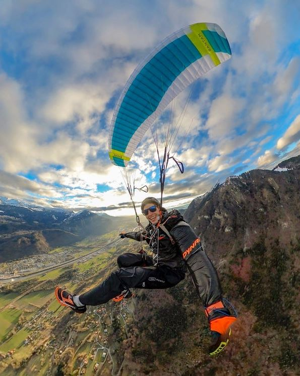
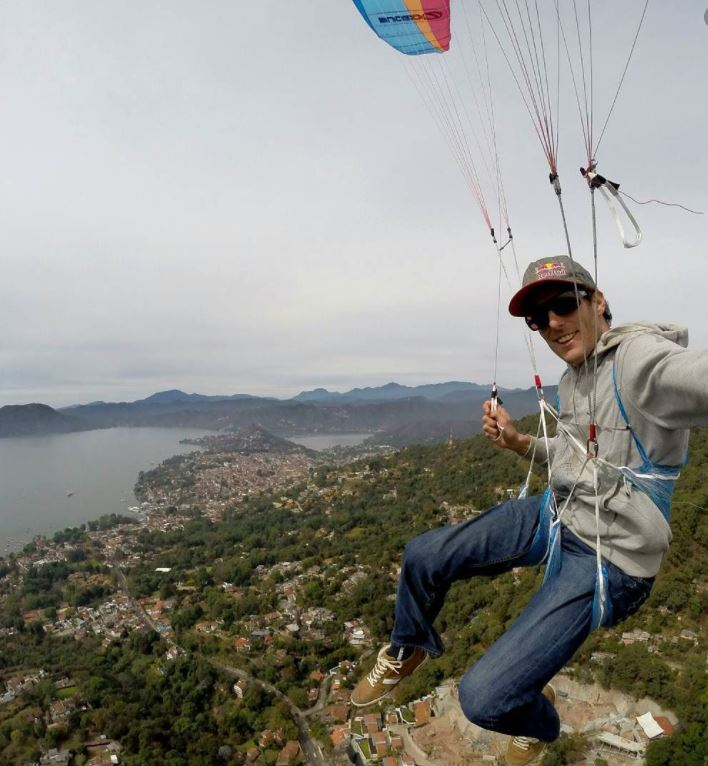

Sporun efsane isimlerinden ve en mütevazılarından biri, mutlaka takip etmelesiniz. Başlangıç seviyesinden acro seviyesine kadar herkese hitap eden videoları mevcut
Sporun en eski pilotlarından biridir. Kanat kontrolünü ve hakimiyetini arttırmak için efsane videoları mevcuttur.
